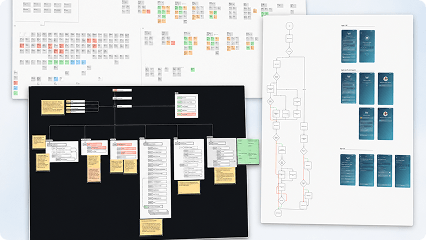

INTERCONNECTED
A community on the water
Owners, crew, vendors, and guests connected in one place.
VesselHaven · Product Design Case Study
Yacht Life Should Be Easier
AI-assisted yacht management, community & services marketplace — across desktop, tablet, and mobile.

VesselHaven connects yacht owners, captains, crew, service providers, and guests in a single ecosystem — cutting coordination overhead so everyone spends less time managing and more time on the water.
PROCESS & CONTRIBUTION
Each step connects to the detailed section below, turning the old single image case study into a scannable product story.
1. Discovery
The platform had to balance the expectations of several distinct user groups — yacht owners, captains, brokers, service providers, and guests — each with different responsibilities, permissions, expectations, and workflows.
IDENTIFYING USER NEEDS AND PAIN POINTS
Through interviews and discussions with members of the yachting community, we collected needs, pain points, goals, and ideas. AI-assisted analysis helped organize research notes, cluster recurring themes, identify patterns, and highlight conflicting or missing requirements.
KEY INSIGHT
The platform could not be designed as a collection of isolated features. It required one connected operational ecosystem with tailored experiences and access levels for every user role.

2. UX Design Process
VesselHaven combines multiple interconnected modules, so the UX needed to be scalable and consistent from the beginning.
I translated discovery findings, role profiles, and journey maps into a clear information architecture, role-based navigation, and end-to-end user flows. Each module was designed to work independently while remaining part of one connected product ecosystem.
Consistent interaction patterns reduced the learning curve across the platform, while contextual actions made advanced functionality accessible to both experienced professionals and first-time users.

3. Design System
A flexible design system keeps the growing platform consistent and fast to build — ocean-drawn color, Nunito Sans type, and a signature glass-over-gradient surface.
I created coordinated light and dark themes built from the same semantic tokens, components, interaction patterns, and visual hierarchy. Special attention was given to text contrast, status indicators, icons, data-heavy layouts, and interactive states.
The interface balances modern aesthetics with clarity, letting users manage complex information — finances, schedules, crew, and maintenance — without feeling overwhelmed.


4. Design solutions & Prototyping
Throughout product development, we created an extensive library of interactive Figma prototypes — from individual screens and module interactions to complete end-to-end user journeys.
Claude was integrated into the workflow to rapidly generate, refine, and compare alternative solutions. This helped explore interaction patterns, identify edge cases, and evaluate directions before committing development resources.
The AI-assisted workflow also helped transform approved prototypes into frontend code that developers could integrate into the product.
PROTOTYPING ACTIVITIES
Key flows were tested with real users, including yacht captains and owners. Direct feedback from usability sessions, community events, and industry exhibitions helped refine the product experience.
5. User Testing & Iteration
A dedicated test version of the app was created so yacht captains and owners could interact with realistic workflows and complete key tasks in a practical product environment.
User observations and comments were organized into recurring themes, usability issues, and improvement opportunities. Each finding was evaluated according to user impact, business value, frequency, and relevance across different roles.
Feedback was translated into specific product improvements across navigation, terminology, information hierarchy, interaction patterns, and operational flows.
TESTING AND ITERATION ACTIVITIES
6. Final Product Experience
The final design brought VesselHaven’s complex operational workflows together within one scalable, responsive platform.
Each user role receives a tailored dashboard, relevant tools, and appropriate permissions, while shared navigation, components, terminology, and interaction patterns keep the experience consistent across the entire product.
Designed for real yachting environments, the interface works across desktop, tablet, and mobile devices.
FINAL SOLUTION

PRODUCT OUTCOME
VesselHaven evolved from a large collection of ideas, requirements, and interconnected workflows into one clear product experience.
The final solution simplifies complex yacht operations, gives every user role access to the information that matters to them, and provides a scalable foundation for adding new modules as the platform grows.
INTERCONNECTED
Owners, crew, vendors, and guests connected in one place.
ORCHESTRATED
Trips, tasks, and payments designed to feel easier to manage.
SEAWORTHY
A boat that is always prepared for the next voyage.
What this project drew on end-to-end.
NEXT PROJECT